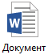
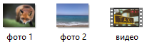
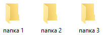
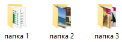
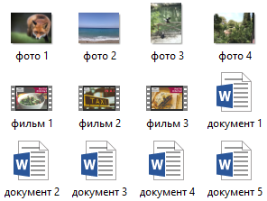
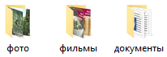
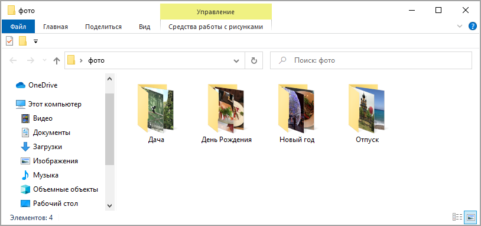
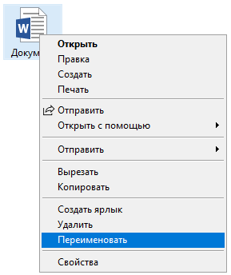
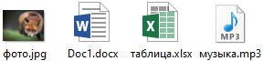

Файл и папка
Файлы — это все данные, которые есть в компьютере: документы, фото, музыка, видео и всё остальное. Это объекты, в которых хранится определенная информация.
Один файл — это один объект на компьютере. Но так как его содержимое может быть различным, то они отличаются внешне, а также по размеру и расширению.
Папки — это каталоги для файлов, отделения, куда их можно поместить. Внутрь одного такого каталога можно положить различные объекты, в том числе другие папки.
Как отличить файл от папки
Файлы обозначаются различными значками. Вид такой иконки зависит от программы, в которой объект будет открыт:

Например, документ будет отмечен значком программы для работы с документами. В моем случае, это иконка Word:
Некоторые объекты не отмечены значками, а показано их содержимое: анонс фотографии, кадр из фильма:
Папки обозначены желтой прямоугольной иконкой:
Если внутри есть какие-либо объекты, она выглядит немного иначе:
На заметку. Размер иконок и их представление можно изменить. Для этого щелкнуть по пустой области правой кнопкой мыши, навести на пункт «Вид» и выбрать отображение.
Пример использования
Допустим, на рабочем столе находится четыре фото, три фильма и пять документов. Некоторые отмечены значками, другие же — анонсом, примерным показом их содержимого. Все эти объекты называются файлы:
Их можно рассортировать по категориям с соответствующими названиями. Создать папку «фото» и добавить в нее снимки, в «фильмы» переместить видео, а в «документы» сложить документы. Получится всего три значка, внутри которых будут нужные данные.
Теперь каждый тип данных будет в своём каталоге. Но необязательно только этот тип, можно добавить и другие объекты. Например, в «фильмы» положить документы.
Кроме того, внутри одной папки можно сделать другие папки. Например, в категории «фото» много снимков с разных мероприятий. Для удобства можно создать внутри несколько папок и рассортировать изображения. Снимки с Нового года отправить в один каталог, со Дня Рождения — в другой.
Имя и расширение
У каждого файла есть название. Оно может быть русским, английским или на другом языке. Написано как большими буквами, так и маленькими. Содержать в себе цифры, пробелы и некоторые знаки: дефис, запятая и другие.
В операционной системе Windows запрещено использовать в названиях следующие знаки: \ / : * ? “ <> |. При попытке указать такой символ в имени система выдаст ошибку.
Название можно поменять: для этого щелкнуть по объекту правой кнопкой мыши и из списка выбрать пункт «Переименовать»:
Помимо имени есть еще расширение. Это точка и несколько английских букв (реже цифр) в конце названия. Оно определяет тип данных и помогает системе определить, в какой программе открыть объект.
Обычно в одном месте нельзя иметь два файла с одинаковым названием и расширением. Они должны отличаться хотя бы цифрой.
Наиболее популярны следующие расширения:
- docx, doc, pdf — документы
- xlsx, xls — таблицы
- txt — простой текст
- jpg, jpeg, png, gif — изображение
- mp3, wav, wma — музыка
- mp4, mpeg, avi — видео
- zip, rar — архив
В системе Windows есть настройка, которая скрывает расширения. И часто она включена — отображаются только имена, без типов. О том, как изменить настройку читайте в этом уроке.
Размер
Каждый файл имеет какой-то компьютерный размер. Его величина зависит от типа и количества данных. Ведь в книге может быть как 200 страниц, так и 2000. А если в ней еще и иллюстрации, то вес будет значительно больше.
Текстовая информация, даже если ее много, занимает относительно мало место, а вот графика и видео — много.
Компьютерный размер измеряется в битах, байтах, килобайтах, мегабайтах, гигабайтах и терабайтах. Бит — это самая маленькая единица, такого размера объектов в системе не встретишь. Объемы начинаются с байтов — в одном байте 8 бит.
- КБ (килобайт) = 1024 байта
- МБ (мегабайт) = 1024 КБ
- ГБ (гигабайт) = 1024 МБ
- ТБ (терабайт) = 1024 ГБ